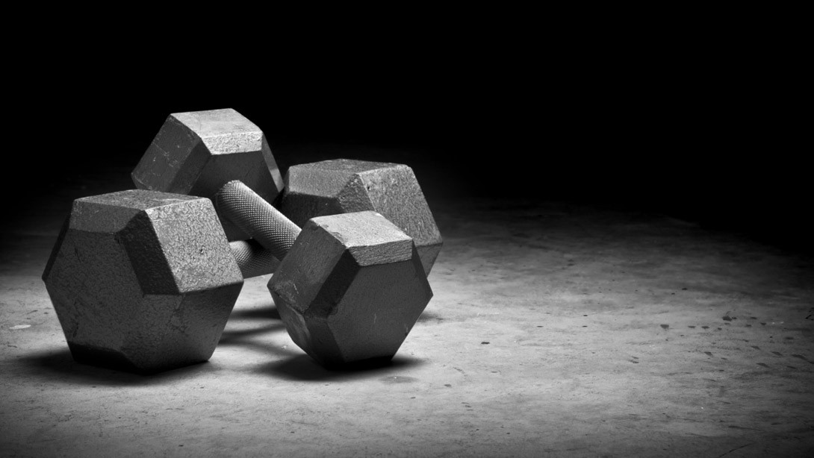

Nací en Los Angeles, ahora hace diecinueve años. Me encanta la música: toco cinco instrumentos (la flauta, la guitarra, la ukulele, el bajo, y el piano) y, además, también canto. Mi afición musical nació cuando tenía solo ocho años. Me gusta mucho la comida, y especialmente el helado. En estos momentos, estoy estudiando Exercise and Sport Sciences, que incluye nutrición, anatomía, fisiología, entre otros temas. Mi clase favorita es la de Nutrición para el salud y el entrenamiento, pero también me gusta la de anatomía. Tengo una gran pasión para estos temas y, en el futuro, espero ser una entrenador atlética y trabajar para un equipo importante de fútbol americano, o ser fisioterapeuta.
CV
